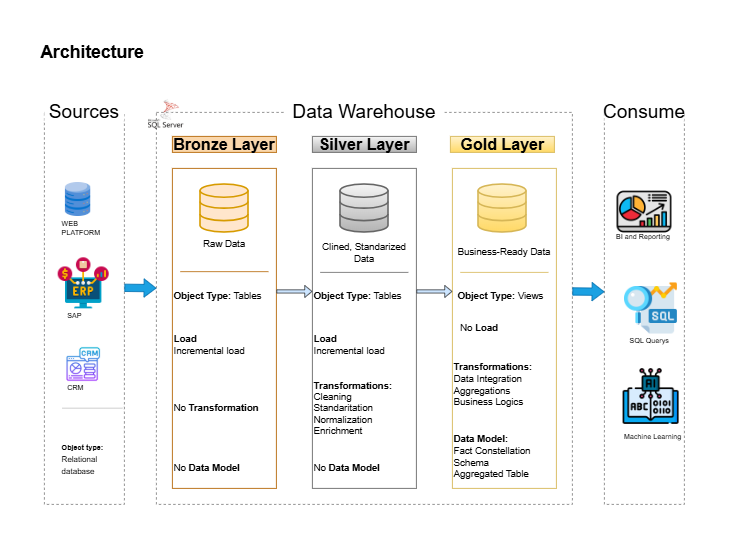
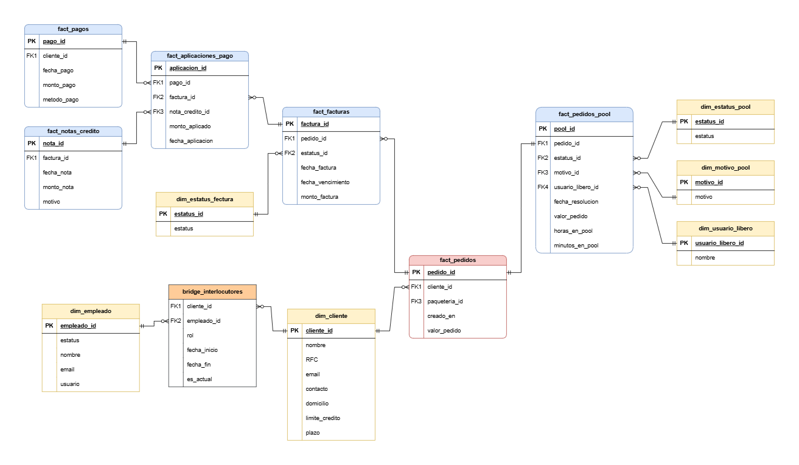

Before this project, there was no centralized data repository. Analysts had to extract information manually from multiple systems, clean it, merge it, and then perform their analysis. This process was time-consuming and prevented automated reporting.
I proposed creating a Data Warehouse (DWH) with the necessary information, centralized and cleaned, to enable efficient analysis for the Accounts Receivable area.

